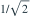
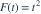
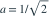

某次观测后，θ的后验分布为  ，即后验密度为2θ，0<θ<1。在损失
，即后验密度为2θ，0<θ<1。在损失  下，Bayes估计是？
下，Bayes估计是？
，即后验密度为2θ，0<θ<1。在损失 下，Bayes估计是？- A

- B

- C

- D

我已思考，展开答案与解析
正确答案：C
- 绝对损失下Bayes决策取后验中位数。
- 后验分布函数为

，解 得
。
易错提醒后验均值2/3适用于平方损失，不适用于本题的绝对损失。
考后回忆 · 条件重建 · 回忆6的损失函数变式
依据考试回忆重建；数字、选项和必要条件为补充设定，非原题。